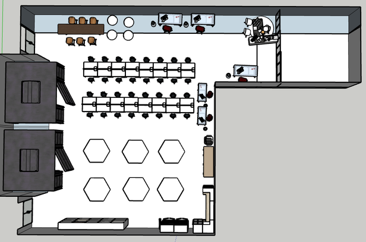
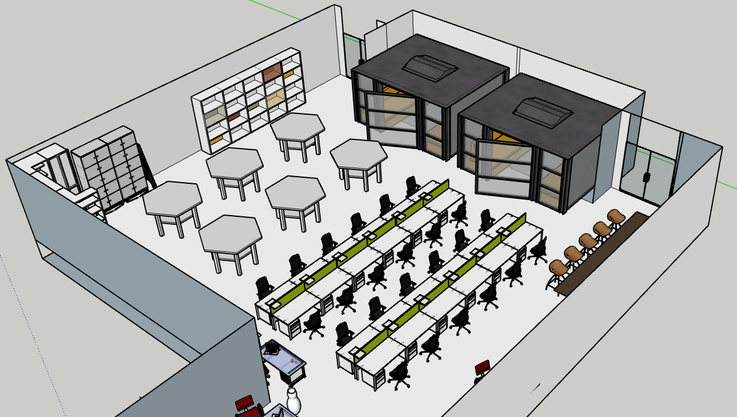

Kích thước bao phòng chưa có trong hồ sơ; bố trí ban đầu được dựng theo ảnh. PDF có 5 vị trí chuyên viên, Word ghi 6 bộ. Bạn có thể tự bổ sung vị trí còn thiếu.
Thao tác này sẽ thay bản bố trí đang mở. Hãy lưu vào hệ thống trước nếu bạn muốn giữ phương án hiện tại.